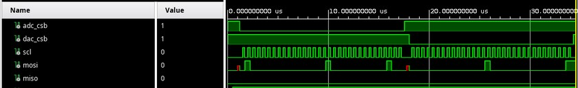

Verification
This device must, of course, be verified. One of the main goals of this project is to gain experience with UVM, and so there will be two separate testbenches, depending on whether I can get the PetaLinux build running on my SoC to the point where Jupyter can be run from it.
Architecture
Verification for this device will be done with UVM, using a combination of AXI and SPI. The goal is to drive stimulus using an AXI agent to gain confidence that the RTL will work, and repurpose a SPI agent to check the buses for shift registers and DACs.
ADC Testbench
The ADC testbench is meant as a learning opportunity for UVM and also for a thorough testbench for the ADC RTL. Unlike a real tapeout, we can recompile, but I’d rather not.

AXI Integration Testbench
If possible, I will integrate this with the Zynq PS such that this can be run similar to PYNQ. In that case, an AXI to SPI adapter will be necessary, and will be run like so:
The first thing to do will be to add an AXI adapter so that it can be used to communicate with both the DAC and the ADC.

Writing Tests
The ADC and DAC are connected to the toplevel regmodel instance. With that scheme, the tests are portable to the single-AXI-bus scheme. If a single AXI interface is eventually possible, then the same scheme would be used.
The reset and clock agents can be set using each one’s set method. Registers can be written using the toplevel regmodel instance.
class reg_rw_test extends base_test;
`uvm_component_utils(reg_rw_test)
function new (string name = "reg_rw_test", uvm_component parent = null);
super.new(name, parent);
endfunction
virtual task main_phase(uvm_phase phase);
uvm_sequencer_base sequencer;
uvm_status_e status;
phase.raise_objection(this);
`uvm_info(get_full_name(), "Beginning main phase", UVM_LOW)
regmodel.ADC.SH_CTRL.write(status, 16'h4004);
regmodel.DAC.ENABLE.dacp_enable.write(status, 1'b1);
phase.drop_objection(this);
endtask
endclass
These register transactions are executed on two different agents, on two different interfaces, which act on some shared pins.

Test List and Status
Here is the latest live status from the regression pipeline.